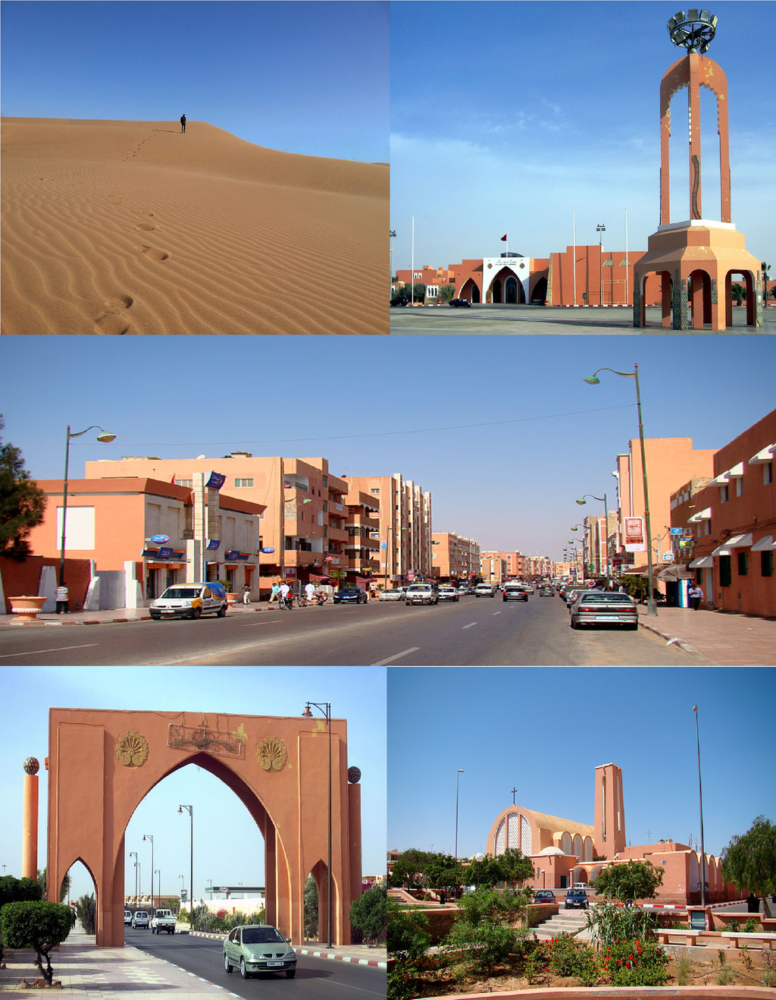

Laâyoune
Laâyoune
Capital of the Laâyoune-Sakia El Hamra

Laâyoune (/lɑːˈjuːn/ lah-YOON,[2][3] also UK: /laɪˈ-/ ly-,[4] French: [la.ajun]) or El Aaiún (/ˌɛl aɪˈ(j)uːn/ EL eye-(Y)OON,[3][5][6] Spanish: [el (a)aˈʝun]; Hassaniya Arabic: لعيون, romanized: Laʕyūn/Elʕyūn; Berber languages: ⵍⵄⵢⵓⵏ, romanized: Leɛyun; Literary Arabic: العيون, romanized: al-ʿUyūn/el-ʿUyūn, lit. 'The Springs') is the largest city of the disputed territory of Western Sahara, with a population of 217,732 in 2014. The city is under de facto administration by Morocco. The modern city is thought to have been founded by the Spanish captain Antonio de Oro in 1938.[7] In 1940, Spain designated it as the capital of the Spanish Sahara.[citation needed] Laâyoune is the capital of the Laâyoune-Sakia El Hamra region administered by Morocco, under the supervision of the UN peacekeeping mission MINURSO.
The town is divided in two by the dry river of Saguia el-Hamra. On the south side is the old lower town, constructed by Spanish colonists.[citation needed] A cathedral from that era is still active; its priests serve this city and Dakhla further south.[citation needed]
Reserve